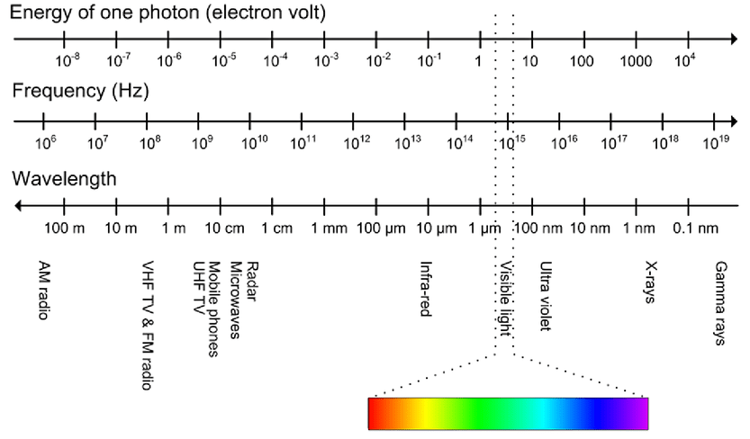

Fiber
Multi-mode & Single-mode

Connector

Fiber Module
Spectrum
Multi-mode :
短波，230 ~ 353 THz，850 ~ 1300 nm
Single-mode :
長波，194 ~ 229 THz，1310 ~ 1550 nm
Source
LED :
多模光纖一般採用 LED 作為光源。LED 能支援最多 40 Gbps。
ILD :
單模光纖採用 ILD (注入式鐳射二級管) 作為光源。
VCSEL :
(Vertical-Cavity Surface-Emitting Laser)，VCSEL 的閃動頻率比 LED 大，能支援最多 100 Gbps。但要求線材支緩 VCSEL。